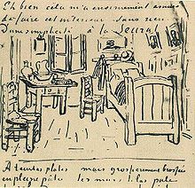

Lettres
Rédigées entre 1872 et 1890, les lettres de Vincent van Gogh témoignent de sa vie ainsi que de
l'enchaînement de ses idées lorsqu'il produisait une œuvre. Ces textes n'ont pas été écrits en vue
d'être publiés : ils représentent les pensées les plus profondes et les sentiments de leur auteur. La
vision intime de sa propre vie, sa démarche artistique et l'origine de ses tableaux y sont expliqués
dans un style direct et transparent. Ces lettres constituent une référence très riche concernant le
contexte artistique et intellectuel dans lequel il se trouvait et les efforts qu'il fournissait pour s'y
attacher, les méthodes et les matériaux utilisés à l'époque, les relations intimes qu'il nouait avec ses
proches, sa façon de voir les autres artistes, etc.JLB 13.
Contexte
En général, les lettres de Van Gogh sont adressées à son frère Théo, qui est aussi son plus grand
soutien48. Au début de cette correspondance, il écritNote 4,Lettre 11 : « […] nous n'aurons qu'à nous
écrire très souvent. » Il a aussi écrit aux autres membres de sa famille et à ses amis, tels que Paul
Gauguin et Émile Bernard49. La lettre la plus ancienne est adressée à Théo et datée du 29 septembre
1872. La dernière, rédigée quelques jours avant sa mort,
était également destinée à Théo et il la
portait sur lui le jour de son suicide. Environ les deux tiers de ses lettres, jusqu'en 1886, sont
rédigées en néerlandais. Après cette date, il écrit en français, langue qu'il maîtrise depuis son
apprentissage de la langue dans son enfance et qu'il perfectionne en France. Il a aussi écrit quelques
lettres en anglais50. En 2011, il existe 902 lettres répertoriées, dont 819 écrites par lui et 83 à son
intention. Ces lettres ainsi que des photographies et d'autres documents le concernant sont conservés en
2011 au musée Van Gogh à Amsterdam.
Histoire de la publication
À la mort de Vincent, son frère devient propriétaire de toutes les peintures, sauf une qui a été vendue
du vivant de Vincent, ainsi que des lettres. Theo, atteint de la syphilis, perd la raison trois mois
après le décès de son frère. D'abord interné à Paris, il est rapidement transféré à Utrecht aux Pays-Bas
où il finira ses joursVK 2. À la suite de cet évènement, Johanna Bonger-Van Gogh, la femme de Theo,
devient l'héritière de cette collection d'art, qui n'a pas à l'époque une grande valeur marchande.
Grâce à Johanna, Émile Bernard et d'autres amis, ses lettres apparaissent dans les revues de l'époque
(Van Nu en Straks et Mercure de France, par exemple). La première publication des lettres sous forme
d'ouvrage date de 191451. Cette édition comporte les lettres de Vincent à Theo et à Johanna. Durant les
années 1920, d'autres correspondances de Vincent apparaissent : Émile Bernard, Paul Gauguin,
Gabriel-Albert Aurier, Paul Signac, John Peter Russell, etc. Après la mort de Johanna en 1925, son fils
Vincent Willem van Gogh prend le relais. Après la Seconde Guerre mondiale, il publie une édition en 4
volumes de nature documentaire52. Vingt ans plus tard, il publie une autre édition en 2 volumes, cette
fois-ci en tâchant de rassembler les dernières lettres de Van Gogh en français53.
Petit à petit, le nombre d'ouvrages concernant les lettres se multiplie. Sa célébrité ne cessant de
croître, la publication de ses lettres et leur analyse deviennent de plus en plus fréquentes, comme les
travaux de Jan Hulsker54,55. L'originalité du travail de Hulsker réside dans sa recherche de
compréhension et d'explication des œuvres. Il a identifié les œuvres mentionnées dans les lettres,
reproduit les croquis et revu les datations des courriersJLB 14. Pour le centenaire de Van Gogh, le
musée Van Gogh publie sa correspondance au complet en néerlandais56 dans l'ordre chronologique. De
nombreux livres reprennent une partie des lettres et les analysent à leur façon. Le dernier grand
ouvrage est le fruit du projet Lettres de Van Gogh, lancé par le musée Van Gogh, en partenariat avec le
Huygens Institute en 199450. Publiés en trois langues (néerlandais, français et anglais), ces 6 volumes
offrent une analyse approfondie, de nouvelles lettres non publiées et, surtout, des bases solides pour
effectuer de nouvelles recherches sur ce peintre57,58.